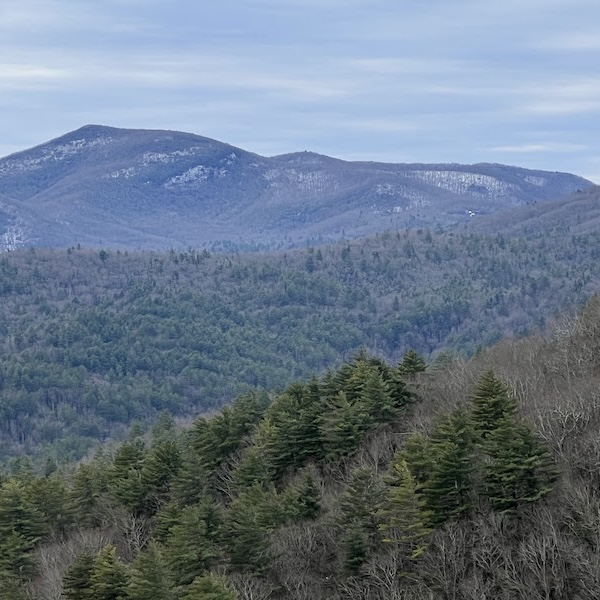

The Mountains of North Carolina

The North Carolina mountains are a breathtaking region known for their scenic beauty, rich biodiversity, and outdoor adventure. Nestled in the Appalachian range, including the Blue Ridge and Great Smoky Mountains, they offer stunning landscapes of rolling hills, dense forests, and cascading waterfalls. With charming small towns, vibrant fall foliage, and opportunities for hiking, camping, and wildlife viewing, the North Carolina mountains are a haven for nature lovers and explorers seeking tranquility and natural splendor year-round.
The North Carolina mountains are a breathtaking region known for their scenic beauty, rich biodiversity, and outdoor adventure. Nestled in the Appalachian range, including the Blue Ridge and Great Smoky Mountains, they offer stunning landscapes of rolling hills, dense forests, and cascading waterfalls. With charming small towns, vibrant fall foliage, and opportunities for hiking, camping, and wildlife viewing, the North Carolina mountains are a haven for nature lovers and explorers seeking tranquility and natural splendor year-round.